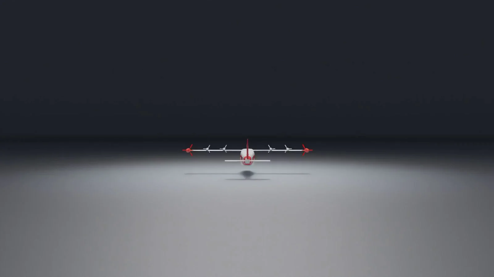
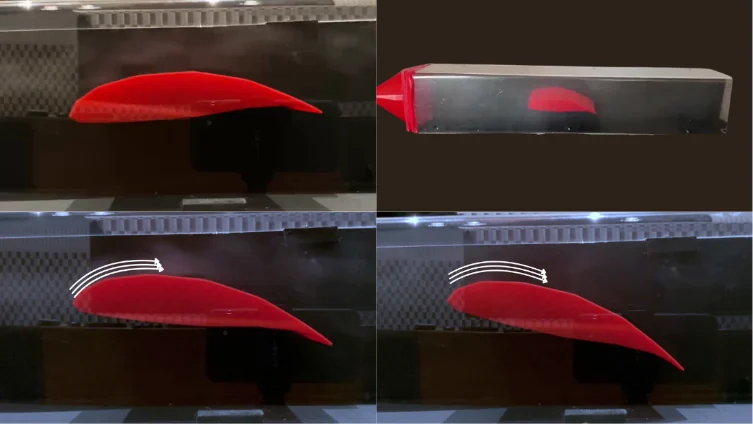

Designing an Electric Aircraft with Machine Learning and Quantum Methods
An unmanned electric aircraft that watches over an area for more than four hours, nearly silent from the ground.
Explore the projectCruise lift-to-drag ratio of the final design
On station over an area 100 km from base
Gap between the machine-learning prediction and the detailed simulation
Agreement of the fast solver with NASA's X-57 simulations
Hours over the area, not minutes
Wildfires, floods and search-and-rescue missions need eyes in the sky for hours. The aircraft flies 100 km out, watches the area from 3000 m and lands with a 30-minute reserve.
Three methods, one design
Simulation
Fast solvers to compare layouts, and a detailed simulation of the complete aircraft to confirm the result.
Machine learning
A model trained on fast simulations predicts lift and drag almost instantly, where a detailed simulation takes hours.
Quantum algorithms
Three small quantum algorithms, run on a simulator, took on airflow, wing forces and the motor layout.
What the study found
Propellers over the wing work best
Six motor layouts were compared on the same airframe. Placing the propellers over the wing gave the most efficient cruise, ahead of NASA's own X-57 layout.
to simulate every candidate in detail
for the one the model chose
One detailed simulation instead of a thousand
A detailed run with propellers takes about ten hours. Machine learning picked one design out of a thousand, and a single detailed run confirmed its prediction.

The wind tunnel agrees
In a self-built wind tunnel, steam showed the flow over a 3D-printed wing section starting to separate at about 14°, in the same pattern as the simulation.
Explore the project
Five stages, from the first motor layout to the scale model.